Roughly One-Third to Half of the zombies you will encounter will be swarm zombies. While they have no special abilities, they are still very formidable threats.
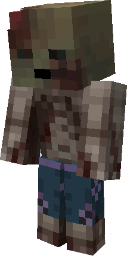
The Scorched Zombie is very similar to the Swarm Zombie except for one key difference: the Scorched Zombie is completely immune to fire. When fighting with fire, make sure to account for these monsters
The Scorched Zombie also has unique drops. When killed, it will drop coal, gunpowder, and fire charges.
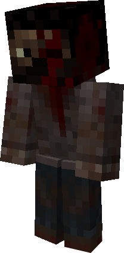
The Miner Zombie is perhaps the most dangerous enemy currently present in Gamingbarn's Zombies. As the name would imply, the Miner Zombie has the ability to break certain blocks. This special ability enables the horde to tunnel through walls and through the earth to reach you. If you wish to survive successfully, you will need to build a base out of blocks the miner is unable to mine. The Miner is able to destroy the following: All Overworld Wood, All Glass Except Tinted, All Dirt, Snow, Regular Ice, Sand, Clay, Terracotta, All Unpolished Stones, Wool, and All Cracked Bricks. The Miner Zombie also has increased attack damage due to the pickaxe it carries.
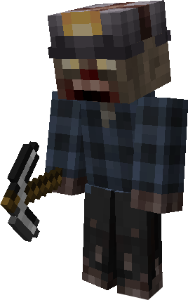
While seemingly harmless on the surface, the Builder Zombie can be almost as dangerous as the Miner Zombie. Capable of building bridges and staircases, the Builder Zombie is able to allow the swarm to cross large gaps and climb over walls.
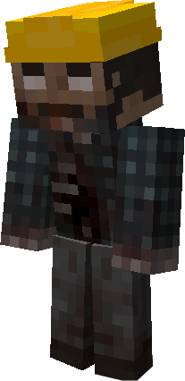
The Nurse Zombie has the unique ability to restore the HP of two nearby zombies. This can make fighting large groups of zombies tricky, especially to those with weak weapons. Don't fret, as the Nurse Zombie has one clear weakness: Nurses Zombies are unable to heal other Nurse Zombies.
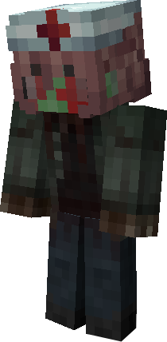
The Psychopath Zombie doesn't have any special abilities, but it is still dangerous nonetheless. This zombie wields an iron sword, greatly increasing its attack damage. If it happens to drop the sword upon death, make sure to grab it. The "Zombie Cutter" is enchanted with smite 2, allowing you to shred through zombies, especially in the early game.
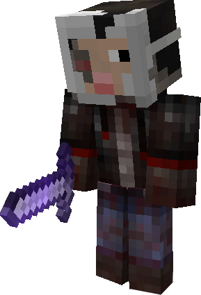
The Acid Spitter is a special zombie with the ability to shoot acidic projectiles at nearby players. Much like when hit normally, these projectiles have a chance to inflict Minor Infection. The range of the acid spitter is roughly seven blocks. These projectiles do not deal knockback.
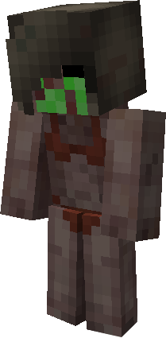
The Acid Spewer is very similar to the Acid Spitter. The Spewer deals less ranged damage and has a shorter range than the Spitter, but fires much quicker. The range of the Acid Spewer is roughly four/five blocks. The projectiles do not deal knockback.
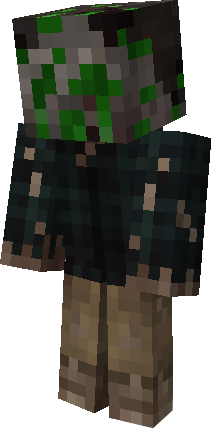
This rare zombie type has no special abilities. It is functionally identical to the Swarm Zombie. The DJ Zombie will always drop one random music disc upon death. The music disc it can drop is limited to the disks dropped when a creeper is killed by a skeleton in vanilla Minecraft.
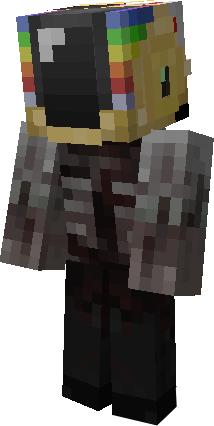
While they may look at act like regular animals at first, do not be fooled. Once players or other targets get close, the Zombie Animal will begin to attack. Zombie Animals can only spawn in the wild. If an animal is bred, it will never be a zombie animal. All zombie animals inflict the hunger status effect to their target.
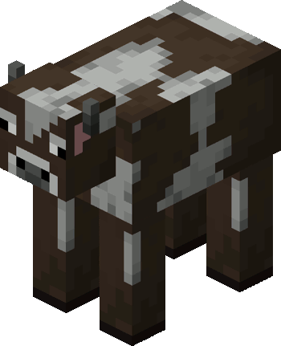
The Water Zombie is a special sub-species of zombie that is very well equipped for water combat. The Water Zombie is very fast when in water, only being slightly slower than you are. Unlike normal zombies,the Water Zombie can spawn during the day in lakes and oceans. Any regular zombies that find themselves trapped underwater will become Water Zombies
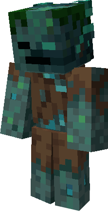
Virtually the same as the Water Zombie except for one key difference: The Water Spitter can shoot projectiles. These projectiles don't shoot as far as the Acid Spitter's and do less damage. The projectile will inflict the mining fatigue status effect to its targets.
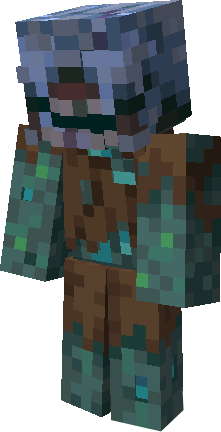
The Water Builder has the same core abilities as the Water Zombie and Builder Zombie. One fact to note is that the Water Builder is unable to build when submerged in water.
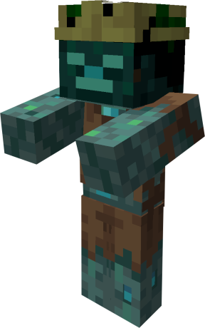
The Water Miner has the same abilities as the Water Zombie and Miner Zombie. Be careful building underwater bases with these guys around!
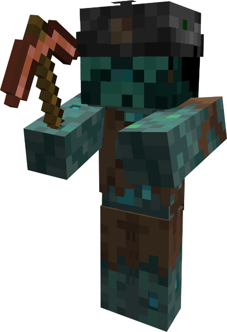
One of the most prevalent features added is the Minor Infection system. Minor Infection is the name for a series of status effects that you have a chance of receiving when attacked by a zombie. Upon being hit, you have a chance to receive Mining Fatigue, Hunger, Slowness. The durations of the different effects go from shortest to longest in the order listed above The chance of receiving Minor Infection depends on the selected difficulty of the pack. Water Zombies, Water Spitters, and Zombie Animals will not inflict Minor Infection.
Most zombies within this server are VERY weak to fire. All zombies will take 6 damage per second they are on fire (except for the scorched, water, and animal zombies) (water and animal zombies will take fire damage at the same rate as normal mobs). This weakness can be exploited to easily eradicate vast amounts of zombies at once. However, zombies will also leave trails of fire whenever they are caught on fire. This fact is important to keep in mind, as a horde of zombies, when lit on fire, can quickly engulf the given area in fire.
In this world of peril, there is one helpful feature. All villagers will regenerate HP over time. This is especially useful for keeping villagers alive, as their HP can no longer be slowly chipped away over multiple encounters.
Every single zombie is capable of picking up items and equipping armor off of the ground. Zombies that have picked up an item will not despawn, and tget will drop the item upon death. Keep this in mind: if you die to a group of zombies they won't go anywhere if they've picked up your stuff.
When you get near a regular zombie, it will target you and try to kill you. You can easily run away and the zombie will most likely forget you. However, if you attack the zombie it will not forget you so easily. In fact, the zombie will also alert all nearby zombies of your presence. This is especially bad if you are trying to hide in a structure that isn't zombie resistant.
Another important thing to keep in mind is how the Water Zombie attacks. During the day, Water Zombies will ignore you unless you get in the water. If you get in the water, all nearby water zombies will quickly rush to your position. During the night, however, all nearby water zombies will rush out of the water to attack you. This fact makes settling near rivers or oceans quite dangerous. Keep in mind that all Water Zombies will head back to the water once the sun rises again. Any Water Zombies left stranded on land when the sun rises will become paralyzed and thus easy to kill.
There are a handful of modifers that zombies have a chance of spawning with. Modifiers are special buffs given to zombies in order to give the horde more variety and to increase its overall power. The chance for a zombie to spawn with any given modifier is equal for each modifier. It is possible for zombies to spawn with more than one modifier at the same time.
Energized zombies are distinguishable by their very quick movement speed, and, more importantly, their ability to step up 1 block similar to a horse. This results in Energized zombies being able to scale stairs with remarkable speed.
Armored zombies are identified by the armor they wear. The main stat changes to Armored zombies are from the armor values of the pieces of armor worn. That being said, there is a flat increase of 2 armor regardless of the pieces worn. The armor worn can be any combination of iron/chainmail leggings, chestplates, and boots. They can also spawn with any combination of copper/leather leggings, chestplates, and boots. The armor also has the chance to spawn with various enchantments as well. The drop chances of the armor pieces are increased to 10%.
Weaponed zombies are identified by the melee weapon they hold in their mainhand. The melee weapon can be any stone/iron/wooden/copper sword, shovel, or axe. The weapon can also spawn with various random enchantments. The drop chance of the weapon is increased to 10%. Zombies that already spawn with a melee weapon, Psychopaths and Miners, are unable to spawn with the Weaponed modifier.
Bulky zombies are identified by their much larger size compared to normal zombies. Bulky zombies only have increased HP and size, they do not benefit from any other stat changes.
Baby zombies are very obvious to identify: they bear the same appearance as vanilla baby zombies. They maintain the same movement speed as the regular zombie, and have decreased HP as well, but are much harder to hit due to their small size.